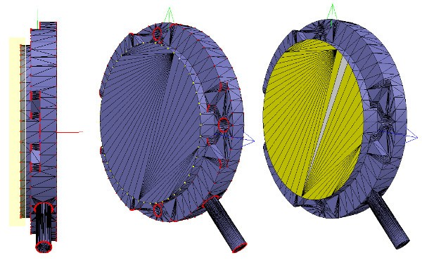
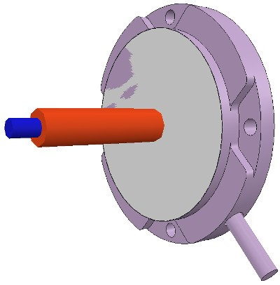

W17 協同任務 <<
Previous Next >> Webots User Guide Tutorial 2
Building a clean model tutorial
構建乾淨的模型教程
40723203 林家宜
Building the visible shapes
建立可見的形狀
We could now directly create primitive shapes in CoppeliaSim with [Menu bar --> Add --> Primitive shape --> ...]. When doing this, we have the option to create pure shapes, or regular shapes.
可使用[菜單欄->添加->基本形狀-> ...]在CoppeliaSim中直接創建基本形狀。
CoppeliaSim supports currently following CAD data formats: OBJ, STL, DXF, 3DS (Windows only), and Collada. URDF is also supported
CoppeliaSim
當前支持以下CAD數據格式：OBJ，STL，DXF，3DS（僅Windows）和Collada。還支持URDF
*Automatic mesh division:
*自動網格劃分：
The function can be accessed with [Menu bar --> Edit --> Grouping/Merging --> Divide selected shapes]. Sometimes, a mesh will be divided more than expected. In that case, simply merge elements that logically belong together (i.e. that will have the same visual attributes and that are part of the same link) back into one single shape ([Menu bar --> Edit -> Grouping/Merging --> Merge selected shapes]).
可以通過[菜單欄->編輯->分組/合併->分割所選形狀]訪問該功能。有時，網格劃分會超出預期。在這種情況下，只需將邏輯上屬於一起的元素（即，具有相同的視覺屬性並且屬於同一鏈接的一部分）合併回一個單一形狀（[菜單欄->編輯->分組/合併->合併選定的形狀]）。
*Extract the convex hull:
*提取凸包：
allows to simplify the mesh by transforming it into a convex hull. The function can be accessed with [Menu bar --> Edit --> Morph selection into convex shapes].
通過將其轉換為凸包來簡化網格。可以通過[菜單欄->編輯->將選擇變形為凸形]來訪問該功能。
*Decimate the mesh:
抽取網格：
allows to reduce the number of triangles contained in the mesh. The function can be accessed with [Menu bar --> Edit --> Decimate selected shape...].
減少網格中包含的三角形數量。可以通過[菜單欄->編輯->縮小所選形狀...]訪問該功能。
40723241 葉承叡
*Remove the inside of the mesh:
刪除網格的內部：
allows to simplify the mesh by removing its inside. This function is based on vision sensors and might give more or less satisfying results depending on the selected settings. The function can be accessed with [Menu bar --> Edit --> Extract inside of selected shape].
允許通過刪除其內部來簡化網格。此功能基於視覺傳感器，根據所選設置可能會或多或少地令人滿意。可以通過[菜單欄->編輯->提取選定形狀的內部]訪問該功能。
*Automatic mesh division:
*自動網格劃分：
this function, which was already described in previous section, will inspect the shape and generate a new shape for all elements that are not linked together via a common edge. This does not always work, but is always worth a try. The function can be accessed with [Menu bar --> Edit --> Grouping/merging --> Divide selected shapes].
此功能已在上一節中進行了描述，它將檢查形狀並為未通過公共邊鏈接在一起的所有元素生成新形狀。這並不總是有效，但總是值得嘗試的。可以通過[菜單欄->編輯->分組/合併->分割所選形狀]訪問該功能。
*Manual mesh division:
手動網格劃分：
via the the triangle edit mode, you can manually select the triangles than logically belong together, then click Extract shape. This will generate a new shape in the scene. Delete the selected triangles after that operation.
通過三角形編輯模式，您可以手動選擇邏輯上不屬於邏輯的三角形，然後單擊“ 提取形狀”。這將在場景中生成新形狀。完成該操作後，刪除選定的三角形。
we can group the shapes that are part of the same link with [Menu bar --> Edit --> Grouping/merging -> Group selected shapes]. We end up with shapes: the base of the robot (or base of the robot's hierarchy tree), and mobile links.
我們可以使用[菜單欄->編輯->分組/合併->分組所選形狀]對屬於同一鏈接的形狀進行分組。我們最終得到形狀：機器人的基礎（或機器人的層次結構樹的基礎）和移動鏈接。
When a shape is created or modified, CoppeliaSim will automatically set its reference frame position and orientation. A shape's reference frame will always be positioned at the shape's geometric center. The frame orientation will be selected so that the shape's bounding box remains as small as possible. This does not always look nice, but we can always reorient a shape's reference frame at any time. We now reorient the reference frames of all our created shapes with [Menu bar --> Edit --> Reorient bounding box --> with reference frame of world]. You have more options to reorient a reference frame in the shape geometry dialog.
創建或修改形狀時，CoppeliaSim將自動設置其參考框架的位置和方向。形狀的參考框架將始終位於形狀的幾何中心。將選擇框架方向，以便形狀的邊界框保持盡可能小。這並不總是看起來不錯，但是我們隨時可以隨時調整形狀的參考框架的方向。現在，我們可以使用[菜單欄->編輯->重定向邊界框->使用世界參考框架]重新調整所有已創建形狀的參考框架。您可以在形狀幾何對話框中有更多選項來重新定向參考系。
40739214 蔡伃捷
Building the joints
建立關節
Now we will take care of the joints/motors. Most of the time, we know the exact position and orientation of each of the joints. In that case, we simply add the joints with [Menu bar --> Add --> Joints --> ...], then we can change their position and orientation with the position dialog and orientation dialog. In other situations, we only have the Denavit-Hartenberg (i.e. D-H) parameters. In that case, we can build our joints via the tool model located in Models/tools/Denavit-Hartenberg joint creator.ttm, in the model browser.
現在，我們將照顧關節/馬達。大多數時候，我們知道每個關節的確切位置和方向。在這種情況下，我們只需使用[菜單欄->添加->關節-> ...]添加關節，然後可以通過位置對話框和方向對話框更改它們的位置和方向。在其他情況下，我們只有Denavit-Hartenberg（即DH）參數。在這種情況下，我們可以通過Models / tools / Denavit-Hartenberg聯合creator.ttm中的工具模型來構建關節，在模型瀏覽器中。
Othertimes, we have no information about the joint locations and orientations. Then, we need to extract them from the imported mesh. Let's suppose this is our case. Instead of working on the modified, more approximate mesh, we open a new scene, and import the original CAD data again.
有時，我們沒有關於關節位置和方向的信息。然後，我們需要從導入的網格中提取它們。讓我們假設這是我們的情況。無需處理修改過的，更近似的網格，而是打開一個新場景，然後再次導入原始CAD數據。
Most of the time, we can extract meshes or primitive shapes from the original mesh. The first step is to subdivide the original mesh. If that does not work, we do it via the triangle edit mode. Let's suppose that we could divide the original mesh. We now have smaller objects that we can inspect. We are looking for revolute shapes, that could be used as reference to create joints at their locations, with the same orientation.
大多數時候，我們可以從原始網格中提取網格或基本形狀。第一步是細分原始網格。如果這不起作用，我們通過三角形編輯模式進行。假設我們可以劃分原始網格。現在，我們可以檢查較小的對象。我們正在尋找旋轉形狀，可以用作在其位置以相同方向創建關節的參考。
First, remove all objects that are not needed. It is sometimes also useful to work across several opened scenes, for easier visualization/manipulation. In our case, we focus first on the base of the robot: it contains a cylinder that has the correct position for the first joint. In the triangle edit mode, we have:
首先，刪除所有不需要的對象。有時在多個打開的場景中工作也很有用，以便於可視化/操作。在我們的案例中，我們首先關注機器人的基座：它包含一個圓柱體，該圓柱體的第一個關節的位置正確。在三角形編輯模式下，我們有：

[Robot base: normal and triangle edit mode visualization]
[機器人基礎：法線和三角形編輯模式可視化]
We change the camera view via the page selector toolbar button, in order to look at the object from the side. The fit-to-view toolbar button can come in handy to correctly frame the object in edition. Then we switch to the vertex edit mode and select all vertices that belong to the upper disc. Remember that by switching some layers on/off, we can hide other objects in the scene. Then we switch back to the triangle edit mode:
我們通過頁面選擇器 工具欄按鈕更改相機視圖，以便從側面查看對象。所述擬合到視圖工具欄按鈕可以派上用場正確幀在版的對象。然後，我們切換到頂點編輯模式，並選擇屬於上光盤的所有頂點。請記住，通過打開/關閉某些層，我們可以隱藏場景中的其他對象。然後我們切換回三角形編輯模式：

[Selected upper disc, vertex edit mode (1 & 2), triangle edit mode (3)]
[選擇的上光盤，頂點編輯模式（1和2），三角形編輯模式（3）]
Now we click Extract cylinder (Extract shape would also work in that case), this just created a cylinder shape in the scene, based on the selected triangles. We leave the edit mode and discard the changes. Now we add a revolute joint with [Menu bar --> Add --> Joint --> Revolute], keep it selected, then control-select the extracted cylinder shape. In the position dialog, on the position tab, we click Apply to selection: this basically copies the x/y/z position of the cylinder to the joint.
現在我們單擊“ 提取圓柱體”（在這種情況下，“ 提取形狀”也將起作用），這只是根據選定的三角形在場景中創建了圓柱體形狀。我們離開編輯模式並放棄更改。現在，通過[菜單欄->添加->關節->旋轉]添加旋轉關節，使其保持選中狀態，然後控制選擇提取的圓柱形狀。在位置對話框的“ 位置”選項卡上，單擊“ 應用於選擇”：這基本上將圓柱體的x / y / z位置複製到關節。
Both positions are now identical. In the orientation dialog, on the orientation tab, we also click Apply to selection: the orientation of our selected objects is now also the same. Sometimes, we will need to additionally rotate the joint about 90/180 degrees around its own reference frame in order to obtain the correct orientation or rotation direction. We could do that on the rotation tab of that dialog if needed (in that case, do not forget to click the Own frame button). In a similar way we could also shift the joint along its axis, or even do more complex operations. This is what we have:
現在兩個位置都相同。在“ 方向”對話框的“ 方向”選項卡上，我們還單擊“ 應用於選擇”：現在，所選對象的方向也相同。有時，我們將需要圍繞其自身的參考框架額外旋轉關節90/180度，以獲得正確的方向或旋轉方向。如果需要，我們可以在該對話框的“ 旋轉”選項卡上執行此操作（在這種情況下，請不要忘記單擊“ 自有框架”按鈕）。同樣，我們也可以沿關節的軸移動關節，甚至進行更複雜的操作。這就是我們所擁有的：

[Joint in correct location, with the correct orientation]
[在正確的位置，以正確的方向接合]
Now we copy the joint back into our original scene, and save it (do not forget to save your work on a regular basis! The undo/redo function is useful, but doesn't protect you against other mishaps). We repeat above procedure for all the joints in our robot, then rename them. We also make all joints a little bit longer in the joint properties, in order to see them all. By defaut, joints will be assigned to visibility layer 2, but can be changed in the object common properties. We assign now all joints to visibility layer 10, then temporarily enable visibility layer 10 for the scene to also visualize those joints (by default, only visibility layers 1-8 are activated for the scene). This is what we have (the model ResizableFloor_5_25 was temporarily made invisible in the model properties dialog):
現在，我們將關節複製回到原始場景中，並保存它（不要忘記定期保存您的工作！撤消/重做功能很有用，但不能保護您免受其他不幸的影響）。我們對機器人中的所有關節重複上述過程，然後重命名它們。我們還將使所有關節的關節屬性稍長一些，以便查看所有關節。通過默認，關節將分配給可見性層2，但可以在對象的公共屬性中進行更改。現在，我們將所有關節分配給可見性層10，然後為場景臨時啟用可見性層10，以使這些關節也可視化（默認情況下，僅激活場景的可見性層1-8）。這就是我們所擁有的（模型ResizableFloor_5_25在模型屬性對話框中暫時不可見）：
[Joints in correct configuration]
[接頭配置正確]
At this point, we could start to build the model hierarchy and finish the model definition. But if we want opur robot to be dynamically enabled, then there is an additional intermediate step:
至此，我們可以開始構建模型層次結構並完成模型定義。但是，如果我們希望動態啟用 opur機器人，則還有一個額外的中間步驟：
40723238 黃語晨
Building the dynamic shapes
建立動態形狀
If we want our robot to be dynamically enabled, i.e. react to collisions, fall, etc., then we need to create/configure the shapes appropriately: a shape can be:
如果我們希望動態啟用機器人，即對碰撞，跌落等做出反應，那麼我們需要適當地創建/配置形狀：
- dynamic or static:a dynamic (or non-static) shape will fall and be influences by external forces/torques. A static (or non-dynamic) shape on the other hand, will stay in place, or follow the movement of its parent in the scene hierarchy.
- respondable or non-respondable: a respondable shape will cause a collision reaction with other respondable shapes. They (and/or) their collider, will be influenced in their movement if they are dynamic. On the other hand, non-respondable shapes will not compute a collision response if they collide with other shapes.
- 動態或靜態：動態（或非靜態）形狀會掉落並受到外力/扭矩的影響。另一方面，靜態（或非動態）形狀將保持不變，或跟隨其父級在場景層次中的移動。
- 可響應或不可響應：可響應形狀會引起與其他可響應形狀的碰撞反應。如果它們是動態的，它們（和/或它們的對撞機）的運動將受到影響。另一方面，不負責任的形狀如果與其他形狀發生碰撞，則不會計算碰撞響應。
Above two points are illustrated here. Respondable shapes should be as simple as possible, in order to allow for a fast and stable simulation. A physics engine will be able to simulate following 5 types of shapes with various degrees of speed and stability:
以上兩點都說明這裡。負責任的形狀應盡量簡單，以實現快速穩定的仿真。物理引擎將能夠以不同的速度和穩定性模擬以下5種類型的形狀：
- Pure shapes:a pure shape will be stable and handled very efficiently by the physics engine. The draw-back is that pure shapes are limited in geometry: mostly cuboids, cylinders and spheres. If possible, use those for items that are in contact with other items for a longer time (e.g. the feet of a humanoid robot, the base of a serial manipulator, the fingers of a gripper, etc.). Pure shapes can be created with [Menu bar --> Add --> Primitive shape].
- 純形狀：純形狀將穩定並由物理引擎非常有效地處理。缺點是純形狀的幾何形狀受到限制：主要是長方體，圓柱體和球體。如果可能的話，將它們用於與其他物品接觸時間較長的物品（例如，人形機器人的腳，串行操縱器的底座，抓手的手指等）。可以使用[Menu bar --> Add --> Primitive shape]
- Pure compound shapes:a pure compound shape is a grouping of several pure shapes. It performs almost as well as pure shapes and shares similar properties. Pure compound shapes can be generated by grouping several pure shapes [Menu bar --> Edit --> Grouping/Merging --> Group selected shapes].
- 純複合形狀：純複合形狀是幾個純形狀的組合。它的性能幾乎與純形狀一樣，並具有相似的特性。可以通過對幾個純形狀進行分組來生成純複合形狀[Menu bar --> Edit --> Grouping/Merging --> Group selected shapes]。
- Convex shapes: a convex shape will be a little bit less stable and take a little bit more computation time when handled by the physics engine. It allows for a more general geometry (only requirement: it need to be convex) than pure shapes. If possible, use convex shapes for items that are sporadically in contact with other items (e.g. the various links of a robot). Convex shapes can be generated with [Menu bar --> Add --> Convex hull of selection] or with [Menu bar --> Edit --> Morph selection into convex shapes].
- 凹凸形狀：凸起的形狀會有點不太穩定，並採取一點點計算時間時通過物理引擎來處理。與純形狀相比，它允許使用更通用的幾何形狀（僅要求：它必須是凸形的）。如果可能，將凸形用於偶爾與其他物品接觸的物品（例如，機器人的各個鏈接）。可以使用[Menu bar --> Add --> Convex hull of selection]或[Menu bar --> Edit --> Morph selection into convex shapes]生成凸形。
- Compound convex shapes, or convex decomposed shapes: a convex decomposed shape is a grouping of several convex shapes. It performs almost as well as convex shapes and shares similar properties. Convex decomposed shapes can be generated by grouping several convex shapes [Menu bar --> Edit --> Grouping/Merging --> Group selected shapes], with [Menu bar --> Add --> Convex decomposition of selection...], or with [Menu bar --> Edit --> Morph selection into its convex decomposition...].
複合凸形狀或凸分解形狀：凸分解形狀是幾個凸形狀的組合。它的性能幾乎與凸形相同，並具有相似的特性。可以通過將多個凸形分組[Menu bar --> Edit --> Grouping/Merging --> Group selected shapes]，並使用[Menu bar --> Add --> Convex decomposition of selection...]來生成凸分解形狀。或使用
[Menu bar --> Edit --> Morph selection into its convex decomposition...]。
- Random shapes: a random shape is a shape that is not convex nor pure. It generally has poor performance (calculation speed and stability). Avoid using random shapes as much as possible.
- 隨機形狀：較差勁。應盡量避免使用隨機形狀。
So the order of preference would be: pure shapes, pure compound shapes, convex shapes, compound convex shapes, and finally random shapes. Make sure to also read this page. In case of the robot we want to build, we will make the base of the robot as a pure cylinder, and the other links as convex or convex decomposed shapes.
因此，優先順序為：純形狀，純複合形狀，凸形，複合凸形，最後是隨機形狀。確保還閱讀此頁面。對於要構建的機器人，我們將其基座設為純圓柱體，將其他鏈接設為凸形或凸形分解形狀。
We could use the dynamically enabled shapes also as the visible parts of the robot, but that would probably not look good enough. So instead, we will build for each visible shape we have created in the first part of the tutorial a dynamically enabled counterpart, which we will keep hidden: the hidden part will represent the dynamic model and be exclusively used by the physics engine, while the visible part will be used for visualization, but also for minimum distance calculations, proximity sensor detections, etc.
我們也可以將動態啟用的形狀用作機器人的可見部分，但是看起來可能不夠好。因此，相反，我們將為在本教程第一部分中創建的每個可見形狀構建一個動態啟用的副本，該副本將保持隱藏狀態：隱藏部分將代表動態模型，並由物理引擎專用，而可見部分將用於可視化，還用於最小距離計算，接近傳感器檢測等。
We select object robot, copy-and-paste it into a new scene (in order to keep the original model intact) and start the triangle edit mode. If object robot was a compound shape, we would first have had to ungroup it ([Menu bar --> Edit --> Grouping/Merging --> Ungroup selected shapes]) then merge the individual shapes ([Menu bar --> Edit --> Grouping/Merging --> Merge selected shapes]) before being able to start the triangle edit mode. Now we select the few triangles that represent the power cable, and erase them. Then we select all triangles in that shape, and click Extract cylinder. We can now leave the edit mode and we have our base object represented as a pure cylinder:
我們選擇對像機器人，將其複制並粘貼到新場景中（以保持原始模型不變），然後啟動三角形編輯模式。如果對像機器人是複合形狀，我們首先必須將其取消組合（[Menu bar --> Edit --> Grouping/Merging --> Ungroup selected shapes]），然後合併各個形狀（[Menu bar --> Edit --> Grouping/Merging --> Merge selected shapes]）。現在，我們選擇代表電源線的幾個三角形，並將其刪除。然後，選擇該形狀中的所有三角形，然後單擊“提取圓柱體”。現在我們可以離開編輯模式，我們的基礎對象表示為純圓柱體：

[純圓柱體生成過程，在三角形編輯模式下]
40723233 陳謙諭
We rename the new shape (with a double-click on its name in the scene hierarchy) as robot_dyn
我們將新形狀（在場景層次結構中雙擊其名稱）重命名為robot_dyn
assign it to visibility layer 9,
將其分配給可見性層9，
then copy it to the original scene.
然後將其複製到原始場景。
The rest of the links will be modelled as convex shapes, or compound convex shapes. We now select the first mobile link (i.e. object robot_link1)
其餘鏈接將建模為凸形或複合凸形。現在，我們選擇第一個移動鏈接（即對象robot_link1）
We rename it to robot_link_dyn1 and assign it to visibility layer 9.
並使用[菜單欄->添加->選擇的凸包]從中生成凸形。我們將其重命名為robot_link_dyn1並將其分配給可見性層9。
When extracting the convex hull doesn't retain enough details of the original shape,
當提取凸包沒有保留足夠的原始形狀細節時，
then you could still manually extract several convex hulls from its composing elements
您仍然可以從其組成元素中手動提取多個凸包，
then group all the convex hulls with [Menu bar --> Edit --> Grouping/Merging --> Group selected shapes].
如果這似乎有問題或很耗時，則可以使用[菜單欄->添加->選擇的凸分解...]自動提取凸分解的形狀：
If that appears to be problematic or time consuming, then you can automatically extract a convex decomposed shape with [Menu bar --> Add --> Convex decomposition of selection...]:
如果這似乎有問題或很耗時，則可以使用[菜單欄->添加->選擇的凸分解...]自動提取凸分解的形狀：

[Original shape, and convex shape pendant]
[原始形狀和凸形吊墜]

[Original shape, and convex decomposed shape pendant]
[原始形狀和凸形分解形狀吊墜]
We now repeat the same procedure for all remaining robot links.
現在，我們對所有剩餘的機器人鏈接重複相同的過程。
Once that is done, we attach each visible shape to its corresponding invisible dynamic pendant.
完成後，我們將每個可見的形狀附加到其相應的不可見的動態吊墜上。
We do this by selecting first the visible shape, then via control-click selecting its dynamic pendant then [Menu bar --> Edit --> Make last selected object parent].
為此，我們先選擇可見的形狀，然後按住Control鍵並單擊以選擇其動態吊墜，然後選擇[菜單欄->編輯->將最後選擇的對象設為父對象]。
The same result can be achieved by dragging the visible shape onto its dynamic pendant in the scene hierarchy:
通過將可見形狀拖動到場景層次中的動態吊墜上，可以達到相同的結果：

[Visible shapes attached to their dynamic pendants]
[可見的形狀附加到動態吊墜上]
We still need to take care of a few things:
我們仍然需要注意一些事項：
first, since we want the dynamic shapes only visible to the physics engine, but not to the other calculation modules,
首先，由於我們希望動態形狀僅對物理引擎可見，而對其他計算模塊不可見，
we uncheck all object special properties for the dynamic shapes, in the object common properties.
因此在對象通用屬性中取消選中動態形狀的所有對象特殊屬性。
Then, we still have to configure the dynamic shapes as dynamic and respondable.
然後，我們仍然必須將動態形狀配置為dynamic和responseable。
We do this in the shape dynamics properties. Select first the base dynamic shape (i.e. robot_dyn),
我們在形狀動力學屬性中執行此操作。首先選擇基本動態形狀（即robot_dyn），
then check the Body is respondable item. Enable the first 4 Local respondable mask flags, and disable the last 4 Local respondable mask flags:
然後檢查“ 主體”是否為可響應項。啟用前四個“ 本地可響應掩碼”標誌，並禁用後四個“ 本地可響應掩碼”標誌：
it is important for consecutive respondable links not to collide with each other. For the first mobile dynamic link in our robot (i.e. robot_link_dyn1),
對於連續的可響應鏈接不要彼此衝突非常重要。對於機器人中的第一個移動動態鏈接（即robot_link_dyn1），
we also enable the Body is respondable item, but this time we disable the first 4 Local respondable mask flags, and enable the last 4 Local respondable mask flags.
我們還啟用了“ 身體可響應”項，但是這次我們禁用了前四個“ 本地可響應”掩碼標誌，並啟用最後4個本地可響應掩碼標誌。
We repeat the above procedure with all other dynamic links, while always alternating the Local respondable mask flags:
我們對所有其他動態鏈接重複上述過程，同時始終交替使用Local Responsible Mask標誌：
once the model will be defined, consecutive dynamic shapes of the robot will not generate any collision response when interacting with each other.
一旦定義了模型，則連續的機器人動態形狀在彼此交互時不會產生任何碰撞響應。
Try to always end up with a construction where the dynamic base of the robot, and the dynamic last link of the robot have only the first 4 Local respondable mask flags enabled,
束嘗試始終以這樣一種構造結：機器人的動態基礎和機器人的動態最後一個鏈接僅啟用了前4個“ 本地可響應掩碼”標誌，
so that we can attach the robot to a mobile platform, or attach a gripper to the last dynamic link of the robot without dynamic collision interferences.。
以便我們可以將機器人附加到移動平台，或附加一個抓取器連接到機器人的最後一個動態鏈接，沒有動態碰撞干擾。
Finally, we still need to tag our dynamic shapes as Body is dynamic.
最後，我們仍然需要將動態形狀標記為Body is dynamic。
We do this also in the shape dynamics properties. We can then enter the mass and inertia tensor properties manually,
我們也在形狀動力學屬性中執行此操作。然後，我們可以手動輸入質量和慣性張量屬性，
or have those values automatically computed (recommended) by clicking Compute mass & inertia properties for selected convex shapes.
或者通過單擊“ 計算選定凸形的質量和慣性屬性”來自動計算（推薦）那些值。
Remember also this and that dynamic design considerations.
還請記住這一點以及該動態設計注意事項。
This dynamic base of the robot is a special case: most of the time we want the base of the robot (i.e. robot_dyn) to be non-dynamic (i.e. static),
機器人的動態基礎是一個特例：大多數情況下，我們需要機器人的基礎（即robot_dyn）為非動態（即靜態），
otherwise, if used alone, the robot might fall during movement.
否則，如果單獨使用，則機器人可能會在運動過程中掉落。
But as soon as we attach the base of the robot to a mobile platform, we want the base to become dynamic (i.e. non-static).
但是，一旦我們將機器人的底座連接到移動平台上，我們就希望底座變得動態（即非靜態）。
We do this by enabling the Set to dynamic if gets parent item, then disabling the Body is dynamic item.
我們通過啟用“ 如果獲取父項時設置為動態”項，然後禁用“ 主體為動態項” 來做到這一點。現在運行仿真：
Now run the simulation: all dynamic shapes, except for the base of the robot, should fall. That attached visual shapes will follow their dynamic pendants.
除了機器人的基座之外，所有動態形狀都應下降。附加的視覺形狀將跟隨其動態吊墜。
40723239 黃學聖
Model definition
Now we are ready to define our model. We start by building the model herarchy: we attach the last dynamic robot link (robot_link_dyn6) to its corresponding joint (robot_joint6) by selecting robot_link_dyn6, then control-selecting robot_joint6, then [Menu bar --> Edit --> Make last selected object parent]. We could also have done this step by simply dragging object robot_link_dyn6 onto robot_link6 in the scene hierarchy. We go on by now attaching robot_joint6 to robot_link_dyn5, and so on, until arrived at the base of the robot. We now have following scene hierarchy:
型號定義
現在我們準備定義模型了。我們從建立模型層次結構開始：通過選擇robot_link_dyn6，然後控制選擇robot_joint6，然後選擇[菜單欄->編輯->使最後一個選中的對象，將最後一個動態機器人鏈接（robot_link_dyn6）附加到其相應的關節（robot_joint6）。]。我們也可以做這一步通過簡單的拖動對象robot_link_dyn6到robot_link6在場景層次。現在，我們將robot_joint6附加到robot_link_dyn5上，依此類推，直到到達機器人的底部。現在，我們具有以下場景層次結構：
So we rename robot to robot_visibleBase, and robot_dyn to robot. Now we select the base of the hierarchy tree (i.e. object robot) and in the object common properties we enable Object is model base. We also enable Object/model can transfer or accept DNA. A model bounding box appeared, encompassing the whole robot. The bounding box however appears to be too large: this is because the bounding box also encompasses the invisible items, such as the joints. We now exclude the joints from the model bounding box by enabling the Don't show as inside model selection item for all joints. We could do the same procedure for all invisible items in our model. This is also a useful option in order to also exclude large sensors or other items from the model bounding box. We now have following situation:
我們將robot重命名為robot_visibleBase，並將robot_dyn重命名為robot。現在，我們選擇層次結構樹的基礎（即對像機械手），並在對象公共屬性中啟用“ 對象為模型基礎”。我們還使對象/模型可以轉移或接受DNA。出現了一個模型包圍盒，包圍了整個機器人。但是，邊界框似乎太大：這是因為邊界框還包含不可見的項，例如關節。現在，通過對所有關節啟用“不顯示為內部模型”選擇項，將關節從模型邊界框中排除。我們可以對模型中的所有不可見項執行相同的過程。這也是一個有用的選項，可以將大型傳感器或其他項目也排除在模型邊界框之外。我們現在有以下情況：
We now protect our model from accidental modification. We select all visible objects in the robot, then enable Select base of model instead: if we now click a visible link in the scene, the base of the robot will be selected instead. This allows us to manipulate the model as if it was a single object. We can still select visible objects in the robot via control-shift-clicking in the scene, or by selecting the object in the scene hierarchy. We now put the robot into a correct default position/orientation. First, we save current scene as a reference. Then we select the model and modify its position/orientation appropriately. It is considered good practice to position the model (i.e. its base object) at X=0 and Y=0.
現在，我們保護模型免受意外修改。我們選擇機器人中所有可見的對象，然後啟用“ 選擇模型的基礎”：如果現在單擊場景中的可見鏈接，則會改為選擇機器人的基礎。這使我們可以像對待單個對像一樣操作模型。我們仍然可以通過按住Shift鍵並單擊場景或在場景層次中選擇對象來選擇機器人中的可見對象。現在，我們將機器人置於正確的默認位置/方向。首先，我們將當前場景保存為參考。然後我們選擇模型並修改其位置/方向適當地。將模型（即其基礎對象）放置在X = 0和Y = 0處被認為是一種好習慣。
We now run the simulation: the robot will collapse, since the joints are not controlled by default. When we added the joints in the previous stage, we created joints in force/torque mode, but their motor or controller was disabled (by default). We can now adjust our joints to our requirements. In our case, we want a simple PID controller for each one of them. In the joint dynamic properties, we click Motor enabled and adjust the maximum torque. We then click Control loop enabled and select Position control (PID). We now run the simulation again: the robot should hold its position. Try to switch the current physics engine to see if the behaviour is consistent across all supported physics engines. You can do this via the appropriate toolbar button, or in the general dynamics properties.
現在我們運行模擬：由於默認情況下關節不受控制，因此機器人將崩潰。在上一階段添加關節時，我們以力/扭矩模式創建了關節，但其電動機或控制器已禁用（默認情況下）。現在，我們可以根據需要調整關節。在我們的案例中，我們希望為每個控制器都提供一個簡單的PID控制器。在關節動態屬性中，單擊“ 啟用電動機”並調整最大扭矩。然後，我們點擊“ 啟用控制環”，然後選擇“ 位置控制（PID）”。現在，我們再次運行仿真：機器人應保持其位置。嘗試切換當前的物理引擎，以查看行為在所有受支持的物理引擎之間是否一致。您可以通過適當的工具欄按鈕，或在常規動力學屬性中執行此操作。
During simulation, we now verify the scene dynamic content via the Dynamic content visualization & verification toolbar button. Now, only items that are taken into account by the physics engine will be display, and the display is color-coded. It is very important to always do this, and specially when your dynamic model doesn't behave as expected, in order to quickly debug the model. Similarly, always look at the scene hierarchy during simulation: dynamically enabled objects should display a ball-bounding icon on the right-hand side of their name.
在仿真過程中，我們現在通過“ 動態內容可視化和驗證”工具欄按鈕來驗證場景動態內容。現在，將僅顯示物理引擎考慮的項目，並且該顯示使用顏色編碼。這是非常重要的，始終做到這一點，特別是當預期，為了快速調試模型動態模型不表現。同樣，在仿真過程中請始終查看場景層次：動態啟用的對象應在其名稱的右側顯示一個球形圖標。
Finally, we need to prepare the robot so that we can easily attach a gripper to it, or easily attach the robot to a mobile platform (for instance). Two dynamically enabled shapes can be rigidly attached to each other in two different ways:
by grouping them: select the shapes, then [Menu bar --> Edit --> Grouping/Merging --> Group selected shapes].
by attaching them via a force/torque sensor: a force torque sensor can also act as a rigid link between two separate dynamically enabled shapes.
In our case, only option 2 is of interest. We create a force/torque sensor with [Menu bar --> Add --> Force sensor], then move it to the tip of the robot, then attach it to object robot_link_dyn6. We change its size and visual appearance appropriately (a red force/torque sensor is often perceived as an optional attachment point, check the various robot models available). We also change its name to robot_attachment:
最後，我們需要準備機器人，以便我們可以輕鬆地將抓取器連接到它，或輕鬆地將機器人連接到移動平台（例如）。可以通過兩種不同的方式將兩個動態啟用的形狀嚴格地彼此附加：
通過對它們進行分組：選擇形狀，然後單擊[菜單欄->編輯->分組/合併->對選定形狀進行分組]。
通過通過力/扭矩傳感器進行連接：力扭矩傳感器還可以充當兩個單獨的動態啟用形狀之間的剛性鏈接。
在我們的情況下，只有選項2是有意義的。我們使用[菜單欄->添加->力傳感器]創建一個力/扭矩傳感器，然後將其移動到機器人的尖端，然後將其附加到對象robot_link_dyn6上。我們會適當地更改其尺寸和外觀（紅色力/扭矩傳感器通常被視為可選的連接點，請檢查可用的各種機器人型號）。我們還將其名稱更改為robot_attachment：
Now we drag a gripper model into the scene, keep it selected, then control-click the attachment force sensor, then click the Assembling/disassembling toolbar button. The gripper goes into place:
現在，我們將抓取器模型拖到場景中，使其保持選中狀態，然後按住Control鍵並點按附件力傳感器，然後單擊“ 裝配/拆卸”工具欄按鈕。夾持器到位：
The gripper knew how to attach itself because it was appropriately configured during its model definition. We now also need to properly configure the robot model, so that it will know how to attach itself to a mobile base for instance. We select the robot model, then click Assembling in the object common properties. Set an empty string for 'Parent' match values, then click Set matrix. This will memorize the current base object's local transformation matrix, and use it to position/orient itself relative to the mobile robot's attachment point. To verify that we did things right, we drag the model Models/robots/mobile/KUKA Omnirob.ttm into the scene. Then we select our robot model, then control-click one of the attachment points on the mobile platform, then click the Assembling/disassembling toolbar button. Our robot should correctly place itself on top of the mobile robot:
抓具知道如何附加自身，因為它在模型定義期間進行了適當的配置。現在，我們還需要正確配置機器人模型，以便它將知道如何將自己附加到移動基座上。我們選擇機器人模型，然後在對象公共屬性中單擊“ 組裝 ” 。為“父項”匹配值設置一個空字符串，然後點擊設置矩陣。這將記住當前基礎對象的局部轉換矩陣，並使用它相對於移動機器人的附著點定位/定向。為了驗證我們做的正確，我們拖動模型Models / robots / mobile / KUKA Omnirob.ttm進入現場。然後，選擇機器人模型，然後在移動平台上按住Control鍵並單擊其中一個附接點，然後單擊“ 組裝/拆卸”工具欄按鈕。我們的機器人應該正確地將自己放置在移動機器人的頂部：
Now we could add additional items to our robot, such as sensors for instance. At some point we might also want to attach embedded scripts to our model, in order to control its behaviour or configure it for various purposes. In that case, make sure to understand how object handles are accessed from embedded scripts. We can also control/access/interface our model from a plugin, from a remote API client, from a ROS node, from a BlueZero node, or from an add-on.
Now we make sure we have reverted the changes done during robot and gripper attachment, we collapse the hierarchy tree of our robot model, select the base of our model, then save it with [Menu bar --> File --> Save model as...]. If we saved it in the model folder, then the model will be available in the model brower.
現在，我們可以向機器人添加其他項目，例如傳感器。在某些時候，我們可能還希望將嵌入式腳本附加到我們的模型中，以便控制其行為或出於各種目的對其進行配置。在這種情況下，請確保了解如何從嵌入式腳本訪問對象句柄。我們還可以通過插件，遠程API客戶端，ROS節點，BlueZero節點或附加組件來控制/訪問/接口模型。
現在，確保已恢復在機械手和抓爪安裝過程中所做的更改，我們折疊了機械手模型的層次樹，選擇了模型的基礎，然後使用[菜單欄->文件->將模型另存為...]。如果我們將其保存在模型文件夾中，則該模型將在模型瀏覽器中可用。
W17 協同任務 <<
Previous Next >> Webots User Guide Tutorial 2